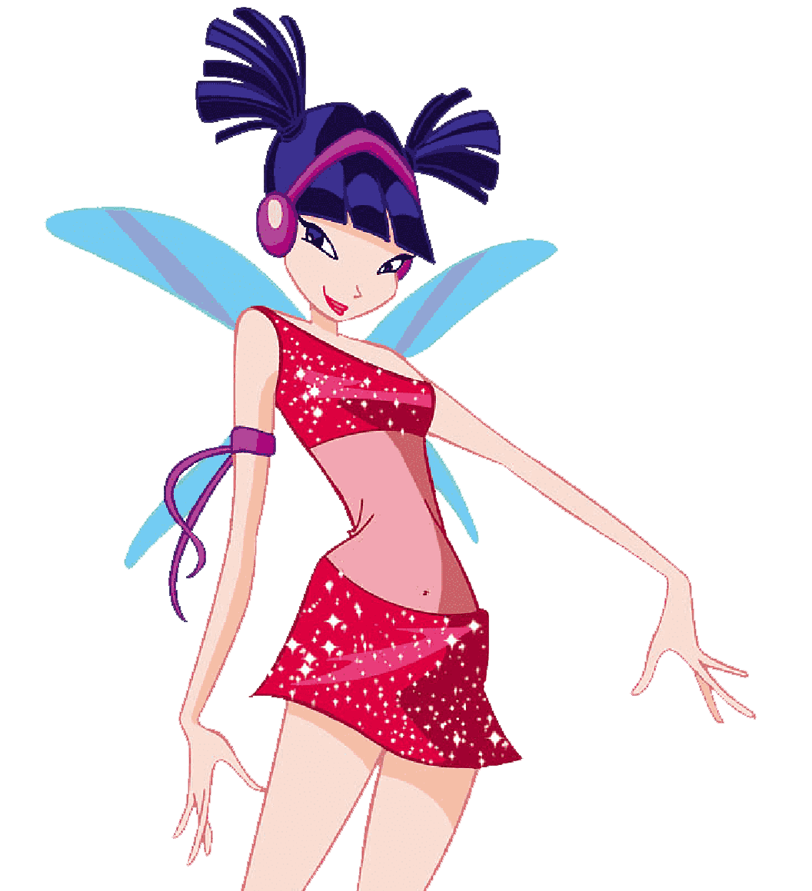

Level 7
Musa
Musa es un personaje ficticio de la serie animada Winx Club de Iginio Straffi. Le encanta la música, bailar, cantar y tocar todos los instrumentos, siendo su favorito la flauta de concierto. Musa suele tocar música increíble, pero toca mejor cuando está sola en Alfea, en un lugar tranquilo.